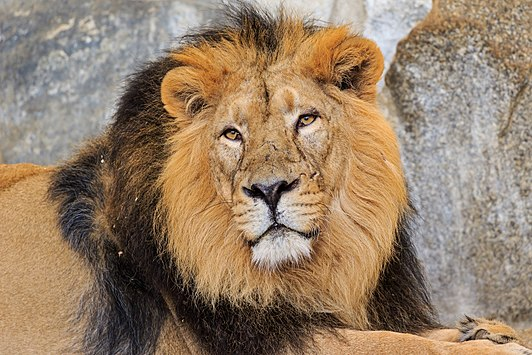

Leeuw

De leeuw is een groot roofdier. Hij heeft een soepel lichaam waarmee hij vele dingen kan. Ook kennen we de leeuw door zijn kracht en woest gedrag, daarom noemen we de leeuw ook wel de “Koning de dieren”. De leeuw behoort bij de katachtige. Die katten familie kun je in twee groepen delen: de kleine en de grote katten bijv. poes/ tijger. Ze hebben dus vele dingen gemeen, een ruwe tong kunnen hun nagels intrekken enz. De leeuw is een zoogdier met een mooie vacht, het zijn goede jagers. Zijn sterk gespierde lichaam heeft een flexibele ruggengraat, maar de staart is een heel belangrijk onderdeel van zijn lichaam. Met de staart houd hij zich in balans of hij nu rent, loopt, klimt of zwemt. Zwemmen doet hij alleen in een noodgeval, want net zoals de kat houd hij niet van water.